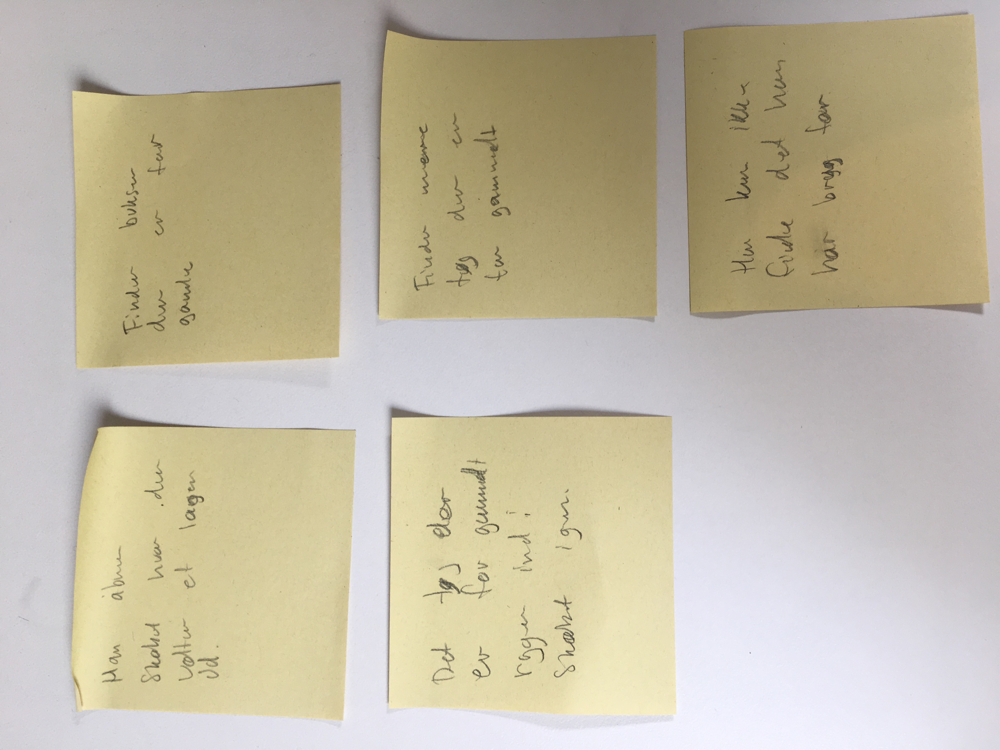
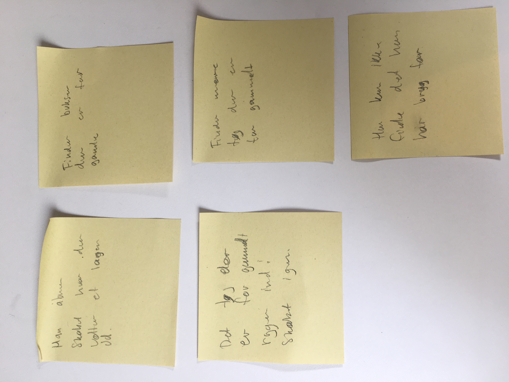

Hvordan hjælper man brugeren med at få styr på sit klædeskab?
Hvad er årsagen til at brugeren ikke har styr på klædeskabet?
Hvorfor har brugeren svært med at få styr på sit klædeskab?
Hvordan gør man klædeskabet overskueligt?
-----------------------------------------------------------
Hvad er årsagen til at brugeren ikke har styr på klædeskabet?
Brugeren bliver forvirret over alle de forskellige muligheder med tøjet, som gør at han ikke gør noget. Han ved ikke hvad der kan doneres, hvad som skal smides ud, hvad som skal gemmes osv. Dvs at brugeren bliver forvirret fordi han ikke har en nem mulighed for at dele sit tøj op. Kerneproblemet er en mangel på overblik.
Hvorfor har brugeren svært med at få styr på sit klædeskab?
Brugeren har svært med at få styr på sit klædeskab fordi det er højst sandsynligvis ikke en prioritet for ham. Den første video man ser demonstrerer at han bare smider tøj ind hvor der er plads med ingen omtanke hvor. Dette kan være fordi han allerede har givet op med at få styr på det hele fordi han er forvirret over mulighederne.
Hvordan gør man klædeskabet overskueligt?
Klædeskabet kan meget hurtigt blive overskueligt med at systematisk gå igennem det hele og finde specifikke hylder til de specifikke tøj ting.
 
